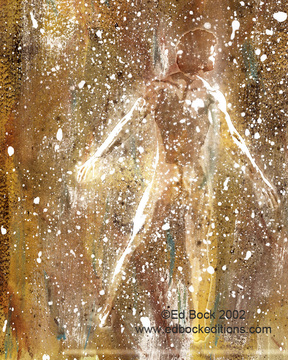

shapeshifting...
"I am large. I contain multitudes"
 These words come from Walt Whitman’s epic poem “Song of Myself.” We are large. We contain multitudes. Do you feel this? Do you feel that you are large? Do you know it to be true?
These words come from Walt Whitman’s epic poem “Song of Myself.” We are large. We contain multitudes. Do you feel this? Do you feel that you are large? Do you know it to be true?
In the scale of time and space we seem to be minuscule, teeny tiny dust motes dancing for but a milli-second, but inside our hearts and souls and minds we fold up whole worlds of experience, imagination and knowledge.
Through the lens of our own understanding we can gaze at the magnificence of the incredibly big, amazingly awesome, impossibly mysterious universe. We are part of that universe. And what we see when we look out is no more amazing than all that lies within. All that beauty, complexity, power and possibility is within each and every one of us too. "I am large. I contain multitudes."
 Maybe you have noticed that you are a slightly different person depending on where you are or who you are with. Some might say that when people change their behavior to fit different circumstances they are not true to themselves. But consider that you have in this life, the gift to become whoever you want to become. Changing according to the circumstances or shapeshifting is merely you trying out different ways of being and seeing what you like and what you don’t like.
Like clouds changing shape we can play with all the facets of our being, all the different variations of self-expression. Life is challenging but there can be joy amidst the challenge if you allow yourself to move fluidly from one state to the next, shifting shapes to suit the environment or circumstances you find yourself in. This fluid adaptation can make our journey through this life so much easier. To recognize what a situation calls for and decide to adapt in the way that will be best for you: that is freedom.